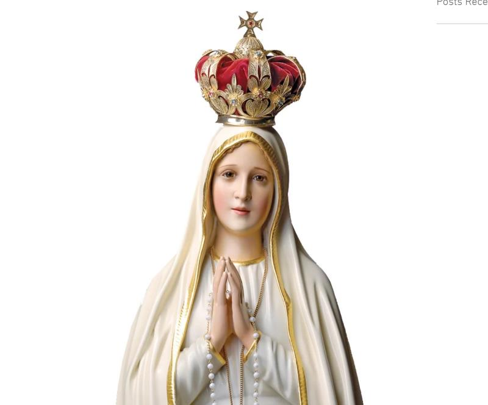
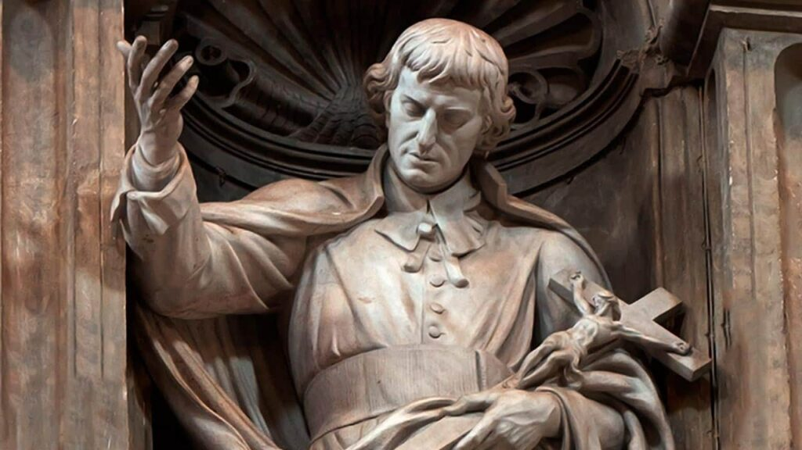

Ao longo da história da Igreja, grandes santos, como Santo Agostinho, São Domingos, Santo Afonso Maria de Ligório, e muitos outros, escreveram sobre Nossa Senhora e sua importância para a Igreja e para a vida dos cristãos. Apesar de a consagração à Virgem Maria ser uma devoção antiga, que remonta aos primeiros séculos da Igreja, São Luís Maria Grignion de Montfort deu a ela um método específico.

Por ser Maria aquela que mais se conformou a Cristo, a perfeita consagração a Ele só se dá por meio da consagração à Santíssima Virgem. 1 Esta devoção, de acordo com São Luís, “consiste em se dar a si mesmo a Maria, inteiramente, a fim de que pertençamos inteiramente a Jesus por meio dela.” 2 Pois Nossa Senhora é “o caminho mais seguro, fácil, curto e perfeito de se abordar Jesus.” 3
Nesse método de consagração, também conhecido como “escravidão de amor a Nossa Senhora“, entregamos completamente a Maria tudo o que somos e temos, confiando inteiramente em Suas mãos santas. Assim, “entreguemos a Jesus e a Maria todos os nossos pensamentos, palavras, ações e sofrimentos, em todos os momentos de nossas vidas, sem exceção. Assim, pois, seja lá o que fizermos, estejamos nós acordados ou dormindo, a comer ou a beber; façamos nós trabalhos importantes ou desimportantes, há de ser sempre verdade que tudo é feito por Jesus e Maria (…) ao menos que explicitamente nos recusemos a dá-las.” 4
Desse modo, tal entrega nos permite pertencer de maneira mais perfeita a Jesus, a fim de crescer cada vez mais na graça divina e alcançar a perfeita união com Cristo. Sem dúvida, a consagração não dispensa os nossos esforços para vencer as tentações e corresponder à vontade de Deus; no entanto, é um caminho mais fácil e seguro para chegarmos à plena união com Cristo.

São Luís Maria Grignion de Montfort nasceu em 31 de janeiro de 1673 em Montfort-sur-Meu, na Bretanha, França. Sendo sua família católica, cresceu em um ambiente de muita fé e, desde cedo, ajudava os pobres e doentes de sua comunidade e demonstrava grande devoção à Virgem Maria.
Após a sua ordenação, em 1700, São Luís Maria dedicou sua vida ao apostolado e à pregação missionária em diferentes regiões da França. Ele tinha uma profunda espiritualidade mariana e buscava incentivar as pessoas a crescerem em devoção a Nossa Senhora e a Jesus Cristo.
Sendo assim, em 1712, ele fundou a Companhia de Maria, também conhecida como Montfortianos, a fim de promover a devoção mariana e a evangelização. A congregação cresceu e se espalhou por diversas partes do mundo. Nesse mesmo ano, o santo também escreveu sua obra mais conhecida, o “Tratado da Verdadeira Devoção à Santíssima Virgem”, no qual ele apresenta o método de consagração total a Nossa Senhora.
Por fim, São Luís Maria faleceu em 28 de abril de 1716 e foi canonizado em 1947, sendo reconhecido como um exemplo de fervorosa devoção mariana e dedicação ao serviço de Deus e da Igreja.